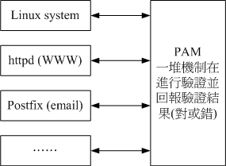

我们前面一直谈到的大多是一般身份用户与系统管理员 (root) 的相关操作，
而且大多是讨论关于可登陆系统的账号来说。那么换个角度想，如果我今天想要创建的，
是一个『仅能使用 mail server 相关邮件服务的账号，而该账号并不能登陆 Linux
主机』呢？如果不能给予该账号一个口令，那么该账号就无法使用系统的各项资源，当然也包括 mail 的资源，
而如果给予一个口令，那么该账号就可能可以登陆 Linux 主机啊！呵呵～伤脑筋吧～
所以，底下让我们来谈一谈这些有趣的话题啰！
另外，在本章之前谈到过 /etc/login.defs 文件中，关于口令长度应该默认是
5 个字符串长度，但是我们上面也谈到，该配置值已经被 PAM 模块所取代了，那么 PAM
是什么？为什么他可以影响我们使用者的登陆呢？这里也要来谈谈的！
 特殊的 shell, /sbin/nologin
特殊的 shell, /sbin/nologin
在本章一开头的 passwd 文件结构里面我们就谈过系统账号这玩意儿，这玩意儿的 shell
就是使用 /sbin/nologin ，重点在于系统账号是不需要登陆的！所以我们就给他这个无法登陆的合法 shell。
使用了这个 shell 的用户即使有了口令，你想要登陆时他也无法登陆，因为会出现如下的信息喔：
This account is currently not available.
|
我们所谓的『无法登陆』指的仅是：『这个使用者无法使用 bash 或其他 shell 来登陆系统』而已，
并不是说这个账号就无法使用其他的系统资源喔！
举例来说，各个系统账号，打印作业由 lp 这个账号在管理， WWW 服务由 apache 这个账号在管理，
他们都可以进行系统程序的工作，但是『就是无法登陆主机』而已啦！^_^
换个角度来想，如果我的 Linux 主机提供的是邮件服务，所以说，在这部 Linux 主机上面的账号，
其实大部分都是用来收受主机的信件而已，并不需要登陆主机的呢！
这个时候，我们就可以考虑让单纯使用 mail 的账号以 /sbin/nologin 做为他们的 shell ，
这样，最起码当我的主机被尝试想要登陆系统以取得 shell 环境时，可以拒绝该账号呢！
另外，如果我想要让某个具有 /sbin/nologin 的使用者知道，他们不能登陆主机时，
其实我可以创建『 /etc/nologin.txt 』这个文件，
并且在这个文件内说明不能登陆的原因，那么下次当这个用户想要登陆系统时，
屏幕上出现的就会是 /etc/nologin.txt 这个文件的内容，而不是默认的内容了！
|
例题：
当使用者尝试利用纯 mail 账号 (例如 myuser3) 时，利用 /etc/nologin.txt
告知用户不要利用该账号登陆系统。
答：
直接以 vi 编辑该文件，内容可以是这样：
[root@www ~]# vi /etc/nologin.txt
This account is system account or mail account.
Please DO NOT use this account to login my Linux server.
|
想要测试时，可以使用 myuser3 (此账号的 shell 是 /sbin/nologin) 来测试看看！
[root@www ~]# su - myuser3
This account is system account or mail account.
Please DO NOT use this account to login my Linux server.
[root@www ~]#
|
结果会发现与原本的默认信息不一样喔！ ^_^
|
PAM 模块简介
在过去，我们想要对一个使用者进行认证 (authentication)，得要要求用户输入账号口令，
然后透过自行撰写的程序来判断该账号口令是否正确。也因为如此，我们常常得使用不同的机制来判断账号口令，
所以搞的一部主机上面拥有多个各别的认证系统，也造成账号口令可能不同步的验证问题！
为了解决这个问题因此有了 PAM (Pluggable Authentication Modules, 嵌入式模块) 的机制！
PAM 可以说是一套应用程序编程接口 (Application Programming Interface,
API)，他提供了一连串的验证机制，只要使用者将验证阶段的需求告知 PAM 后， PAM 就能够回报使用者验证的结果
(成功或失败)。由于 PAM 仅是一套验证的机制，又可以提供给其他程序所呼叫引用，因此不论你使用什么程序，都可以使用
PAM 来进行验证，如此一来，就能够让账号口令或者是其他方式的验证具有一致的结果！也让程序设计师方便处理验证的问题喔！
(注5)

图 5.2.1、 PAM 模块与其他程序的相关性
如上述的图示， PAM 是一个独立的 API 存在，只要任何程序有需求时，可以向 PAM 发出验证要求的通知，
PAM 经过一连串的验证后，将验证的结果回报给该程序，然后该程序就能够利用验证的结果来进行可登陆或显示其他无法使用的信息。
这也就是说，你可以在写程序的时候将 PAM 模块的功能加入，就能够利用 PAM 的验证功能啰。
因此目前很多程序都会利用 PAM 喔！所以我们才要来学习他啊！
PAM 用来进行验证的数据称为模块 (Modules)，每个 PAM 模块的功能都不太相同。举例来说，
还记得我们在本章使用 passwd 命令时，如果随便输入字典上面找的到的字符串，
passwd 就会回报错误信息了！这是为什么呢？这就是 PAM 的 pam_cracklib.so 模块的功能！他能够判断该口令是否在字典里面！
并回报给口令修改程序，此时就能够了解你的口令强度了。
所以，当你有任何需要判断是否在字典当中的口令字符串时，就可以使用 pam_cracklib.so 这个模块来验证！
并根据验证的回报结果来撰写你的程序呢！这样说，可以理解 PAM 的功能了吧？没错！ PAM 的模块也是很重要的一环！
PAM 模块配置语法
PAM 藉由一个与程序相同文件名的配置文件来进行一连串的认证分析需求。我们同样以 passwd 这个命令的呼叫 PAM 来说明好了。
当你运行 passwd 后，这支程序呼叫 PAM 的流程是：
- 用户开始运行 /usr/bin/passwd 这支程序，并输入口令；
- passwd 呼叫 PAM 模块进行验证；
- PAM 模块会到 /etc/pam.d/ 找寻与程序 (passwd) 同名的配置文件；
- 依据 /etc/pam.d/passwd 内的配置，引用相关的 PAM 模块逐步进行验证分析；
- 将验证结果 (成功、失败以及其他信息) 回传给 passwd 这支程序；
- passwd 这支程序会根据 PAM 回传的结果决定下一个动作 (重新输入新口令或者通过验证！)
从上头的说明，我们会知道重点其实是 /etc/pam.d/ 里面的配置文件，以及配置文件所呼叫的 PAM 模块进行的验证工作！
既然一直谈到 passwd 这个口令修改命令，那我们就来看看 /etc/pam.d/passwd 这个配置文件的内容是怎样吧！
[root@www ~]# cat /etc/pam.d/passwd
#%PAM-1.0 <==PAM版本的说明而已！
auth include system-auth <==每一行都是一个验证的过程
account include system-auth
password include system-auth
验证类别 控制标准 PAM 模块与该模块的参数
|
在这个配置文件当中，除了第一行宣告 PAM 版本之外，其他任何『 # 』开头的都是批注，而每一行都是一个独立的验证流程，
每一行可以区分为三个字段，分别是验证类别(type)、控制标准(flag)、PAM的模块与该模块的参数。
底下我们先来谈谈验证类别与控制标准这两项数据吧！
Tips:
你会发现在我们上面的表格当中出现的是『 include
(包括) 』这个关键词，他代表的是『请呼叫后面的文件来作为这个类别的验证』，
所以，上述的每一行都要重复呼叫 /etc/pam.d/system-auth 那个文件来进行验证的意思！
|  |
验证类别主要分为四种，分别说明如下：
- auth
是 authentication (认证) 的缩写，所以这种类别主要用来检验使用者的身份验证，这种类别通常是需要口令来检验的，
所以后续接的模块是用来检验用户的身份。
- account
account (账号) 则大部分是在进行 authorization (授权)，这种类别则主要在检验使用者是否具有正确的权限，
举例来说，当你使用一个过期的口令来登陆时，当然就无法正确的登陆了。
- session
session 是会议期间的意思，所以 session 管理的就是使用者在这次登陆 (或使用这个命令) 期间，PAM 所给予的环境配置。
这个类别通常用在记录用户登陆与注销时的信息！例如，如果你常常使用 su 或者是 sudo 命令的话，
那么应该可以在 /var/log/secure 里面发现很多关于 pam 的说明，而且记载的数据是『session open, session close』的信息！
- password
password 就是口令嘛！所以这种类别主要在提供验证的修订工作，举例来说，就是修改/变更口令啦！
这四个验证的类型通常是有顺序的，不过也有例外就是了。
会有顺序的原因是，(1)我们总是得要先验证身份 (auth) 后，
(2)系统才能够藉由用户的身份给予适当的授权与权限配置 (account)，而且(3)登陆与注销期间的环境才需要配置，
也才需要记录登陆与注销的信息 (session)。如果在运行期间需要口令修订时，(4)才给予 password 的类别。这样说起来，
自然是需要有点顺序吧！
- 第二个字段：验证的控制旗标 (control flag)
那么『验证的控制旗标(control flag)』又是什么？简单的说，他就是『验证通过的标准』啦！
这个字段在管控该验证的放行方式，主要也分为四种控制方式：
- required
此验证若成功则带有 success (成功) 的标志，若失败则带有 failure 的标志，但不论成功或失败都会继续后续的验证流程。
由于后续的验证流程可以继续进行，因此相当有利于数据的登录 (log) ，这也是 PAM 最常使用 required 的原因。
- requisite
若验证失败则立刻回报原程序 failure 的标志，并终止后续的验证流程。若验证成功则带有 success 的标志并继续后续的验证流程。
这个项目与 required 最大的差异，就在于失败的时候还要不要继续验证下去？由于 requisite 是失败就终止，
因此失败时所产生的 PAM 信息就无法透过后续的模块来记录了。
- sufficient
若验证成功则立刻回传 success 给原程序，并终止后续的验证流程；若验证失败则带有 failure 标志并继续后续的验证流程。
这玩意儿与 requisits 刚好相反！
- optional
这个模块控件目大多是在显示信息而已，并不是用在验证方面的。
如果将这些控制旗标以图示的方式配合成功与否的条件绘图，会有点像底下这样：

图 5.3.1、 PAM 控制旗标所造成的回报流程
程序运行过程中遇到验证时才会去呼叫 PAM ，而 PAM 验证又分很多类型与控制，不同的控制旗标所回报的信息并不相同。
如上图所示， requisite 失败就回报了并不会继续，而 sufficient 则是成功就回报了也不会继续。
至于验证结束后所回报的信息通常是『succes 或 failure 』而已，后续的流程还需要该程序的判断来继续运行才行。
常用模块简介
谈完了配置文件的语法后，现在让我们来查阅一下 CentOS 5.x 提供的 PAM 默认文件的内容是啥吧！
由于我们常常需要透过各种方式登陆 (login) 系统，因此就来看看登陆所需要的 PAM 流程为何：
[root@www ~]# cat /etc/pam.d/login
#%PAM-1.0
auth [user_unknown=ignore success=ok ignore=ignore default=bad] pam_securetty.so
auth include system-auth
account required pam_nologin.so
account include system-auth
password include system-auth
# pam_selinux.so close should be the first session rule
session required pam_selinux.so close
session include system-auth
session required pam_loginuid.so
session optional pam_console.so
# pam_selinux.so open should only be followed by sessions...
session required pam_selinux.so open
session optional pam_keyinit.so force revoke
# 我们可以看到，其实 login 也呼叫多次的 system-auth ，所以底下列出该配置文件
[root@www ~]# cat /etc/pam.d/system-auth
#%PAM-1.0
# This file is auto-generated.
# User changes will be destroyed the next time authconfig is run.
auth required pam_env.so
auth sufficient pam_unix.so nullok try_first_pass
auth requisite pam_succeed_if.so uid >= 500 quiet
auth required pam_deny.so
account required pam_unix.so
account sufficient pam_succeed_if.so uid < 500 quiet
account required pam_permit.so
password requisite pam_cracklib.so try_first_pass retry=3
password sufficient pam_unix.so md5 shadow nullok try_first_pass use_authtok
password required pam_deny.so
session optional pam_keyinit.so revoke
session required pam_limits.so
session [success=1 default=ignore] pam_succeed_if.so service in crond quiet \
use_uid
session required pam_unix.so
|
上面这个表格当中使用到非常多的 PAM 模块，每个模块的功能都不太相同，详细的模块情报可以在你的系统中找到：
- /etc/pam.d/*：每个程序个别的 PAM 配置文件；
- /lib/security/*：PAM 模块文件的实际放置目录；
- /etc/security/*：其他 PAM 环境的配置文件；
- /usr/share/doc/pam-*/：详细的 PAM 说明文件。
例如鸟哥使用未 update 过的 CentOS 5.2 ，pam_nologin 说明文件档在：
/usr/share/doc/pam-0.99.6.2/txts/README.pam_nologin。你可以自行查阅一下该模块的功能。
鸟哥这里仅简单介绍几个较常使用的模块，详细的信息还得要您努力查阅参考书呢！ ^_^
- pam_securetty.so：
限制系统管理员 (root) 只能够从安全的 (secure) 终端机登陆；那什么是终端机？例如
tty1, tty2 等就是传统的终端机装置名称。那么安全的终端机配置呢？
就写在 /etc/securetty 这个文件中。你可以查阅一下该文件，
就知道为什么 root 可以从 tty1~tty7 登陆，但却无法透过 telnet 登陆 Linux 主机了！
- pam_nologin.so：
这个模块可以限制一般用户是否能够登陆主机之用。当 /etc/nologin
这个文件存在时，则所有一般使用者均无法再登陆系统了！若 /etc/nologin 存在，则一般使用者在登陆时，
在他们的终端机上会将该文件的内容显示出来！所以，正常的情况下，这个文件应该是不能存在系统中的。
但这个模块对 root 以及已经登陆系统中的一般账号并没有影响。
- pam_selinux.so：
SELinux 是个针对程序来进行细部管理权限的功能，SELinux 这玩意儿我们会在第十七章的时候再来详细谈论。由于 SELinux
会影响到用户运行程序的权限，因此我们利用 PAM 模块，将 SELinux 暂时关闭，等到验证通过后，
再予以启动！
- pam_console.so：
当系统出现某些问题，或者是某些时刻你需要使用特殊的终端接口 (例如 RS232 之类的终端联机设备) 登陆主机时，
这个模块可以帮助处理一些文件权限的问题，让使用者可以透过特殊终端接口 (console) 顺利的登陆系统。
- pam_loginuid.so：
我们知道系统账号与一般账号的 UID 是不同的！一般账号 UID 均大于 500 才合理。
因此，为了验证使用者的 UID 真的是我们所需要的数值，可以使用这个模块来进行规范！
- pam_env.so：
用来配置环境变量的一个模块，如果你有需要额外的环境变量配置，可以参考
/etc/security/pam_env.conf 这个文件的详细说明。
- pam_unix.so：
这是个很复杂且重要的模块，这个模块可以用在验证阶段的认证功能，可以用在授权阶段的账号许可证管理，
可以用在会议阶段的登录文件记录等，甚至也可以用在口令升级阶段的检验！非常丰富的功能！
这个模块在早期使用得相当频繁喔！
- pam_cracklib.so：
可以用来检验口令的强度！包括口令是否在字典中，口令输入几次都失败就断掉此次联机等功能，都是这模块提供的！
这玩意儿很重要！
- pam_limits.so：
还记得我们在十一章谈到的 ulimit 吗？
其实那就是这个模块提供的能力！还有更多细部的配置可以参考：
/etc/security/limits.conf 内的说明。
了解了这些模块的大致功能后，言归正传，讨论一下 login 的 PAM 验证机制流程是这样的：
- 验证阶段 (auth)：首先，(a)会先经过 pam_securetty.so 判断，如果使用者是 root 时，则会参考 /etc/securetty 的配置；
接下来(b)经过 pam_env.so 配置额外的环境变量；再(c)透过 pam_unix.so 检验口令，若通过则回报 login
程序；若不通过则(d)继续往下以 pam_succeed_if.so 判断 UID 是否大于 500 ，若小于 500则回报失败，否则再往下
(e)以 pam_deny.so 拒绝联机。
- 授权阶段 (account)：(a)先以 pam_nologin.so 判断 /etc/nologin 是否存在，若存在则不许一般使用者登陆；
(b)接下来以 pam_unix 进行账号管理，再以 (c) pam_succeed_if.so 判断 UID 是否小于 500 ，若小于 500
则不记录登录信息。(d)最后以 pam_permit.so 允许该账号登陆。
- 口令阶段 (password)：(a)先以 pam_cracklib.so 配置口令仅能尝试错误 3 次；(b)接下来以
pam_unix.so 透过 md5, shadow 等功能进行口令检验，若通过则回报 login 程序，若不通过则 (c)以 pam_deny.so
拒绝登陆。
- 会议阶段 (session)：(a)先以 pam_selinux.so 暂时关闭 SELinux；(b)使用 pam_limits.so
配置好用户能够操作的系统资源； (c)登陆成功后开始记录相关信息在登录文件中； (d)以 pam_loginuid.so
规范不同的 UID 权限；(e)开启 pam_selinux.so 的功能。
总之，就是依据验证类别 (type) 来看，然后先由 login 的配置值去查阅，如果出现『 include system-auth 』
就转到 system-auth 文件中的相同类别，去取得额外的验证流程就是了。然后再到下一个验证类别，最终将所有的验证跑完！
就结束这次的 PAM 验证啦！
经过这样的验证流程，现在你知道为啥 /etc/nologin 存在会有问题，也会知道为何你使用一些远程联机机制时，
老是无法使用 root 登陆的问题了吧？没错！这都是 PAM 模块提供的功能啦！
|
例题：
为什么 root 无法以 telnet 直接登陆系统，但是却能够使用 ssh 直接登陆？
答：
一般来说， telnet 会引用 login 的 PAM 模块，而 login 的验证阶段会有 /etc/securetty 的限制！
由于远程联机属于 pts/n (n 为数字) 的动态终端机接口装置名称，并没有写入到 /etc/securetty ，
因此 root 无法以 telnet 登陆远程主机。至于 ssh 使用的是 /etc/pam.d/sshd 这个模块，
你可以查阅一下该模块，由于该模块的验证阶段并没有加入 pam_securetty ，因此就没有 /etc/securetty
的限制！故可以从远程直接联机到服务器端。
另外，关于 telnet 与 ssh 的细部说明，请参考 鸟哥的 Linux 私房菜服务器篇
|
其他相关文件
除了前一小节谈到的 /etc/securetty 会影响到 root 可登陆的安全终端机， /etc/nologin
会影响到一般使用者是否能够登陆的功能之外，我们也知道 PAM 相关的配置文件在 /etc/pam.d ，
说明文件在 /usr/share/doc/pam-(版本) ，模块实际在 /lib/security/ 。那么还有没有相关的 PAM 文件呢？
是有的，主要都在 /etc/security 这个目录内！我们底下介绍几个可能会用到的配置文件喔！
我们在第十一章谈到的 ulimit 功能中，
除了修改使用者的 ~/.bashrc 配置文件之外，其实系统管理员可以统一藉由 PAM 来管理的！
那就是 /etc/security/limits.conf 这个文件的配置了。这个文件的配置很简单，你可以自行参考一下该文件内容。
我们这里仅作个简单的介绍：
范例一：vbird1 这个用户只能创建 100MB 的文件，且大于 90MB 会警告
[root@www ~]# vi /etc/security/limits.conf
vbird1 soft fsize 90000
vbird1 hard fsize 100000
#账号 限制依据 限制项目 限制值
# 第一字段为账号，或者是群组！若为群组则前面需要加上 @ ，例如 @projecta
# 第二字段为限制的依据，是严格(hard)，还是仅为警告(soft)；
# 第三字段为相关限制，此例中限制文件容量，
# 第四字段为限制的值，在此例中单位为 KB。
# 若以 vbird1 登陆后，进行如下的操作则会有相关的限制出现！
[vbird1@www ~]$ ulimit -a
....(前面省略)....
file size (blocks, -f) 90000
....(后面省略)....
[vbird1@www ~]$ dd if=/dev/zero of=test bs=1M count=110
File size limit exceeded
[vbird1@www ~]$ ll -k test
-rw-rw-r-- 1 vbird1 vbird1 90000 Mar 4 11:30 test
# 果然有限制到了
范例二：限制 pro1 这个群组，每次仅能有一个用户登陆系统 (maxlogins)
[root@www ~]# vi /etc/security/limits.conf
@pro1 hard maxlogins 1
# 如果要使用群组功能的话，这个功能似乎对初始群组才有效喔！
# 而如果你尝试多个 pro1 的登陆时，第二个以后就无法登陆了。
# 而且在 /var/log/secure 文件中还会出现如下的信息：
# pam_limits(login:session): Too many logins (max 1) for pro1
|
这个文件挺有趣的，而且是配置完成就生效了，你不用重新启动任何服务的！
但是 PAM 有个特殊的地方，由于他是在程序呼叫时才予以配置的，因此你修改完成的数据，
对于已登陆系统中的用户是没有效果的，要等他再次登陆时才会生效喔！另外，
上述的配置请在测试完成后立刻批注掉，否则下次这两个使用者登陆就会发生些许问题啦！ ^_^
- /var/log/secure, /var/log/messages
如果发生任何无法登陆或者是产生一些你无法预期的错误时，由于 PAM 模块都会将数据记载在
/var/log/secure 当中，所以发生了问题请务必到该文件内去查询一下问题点！举例来说，
我们在 limits.conf 的介绍内的范例二，就有谈到多重登陆的错误可以到 /var/log/secure 内查阅了！
这样你也就知道为何第二个 pro1 无法登陆啦！^_^